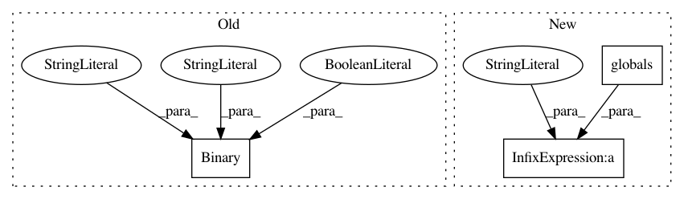

2c339f08da80a6a6d52df37b64fe148155a13e86,cellprofiler/modules/align.py,Align,create_settings,#Align#,48
Before Change
can be aligned to a brightfield image by this method since the relevant
features are bright in one modality where they are dim in the other. </li>
</ul>""")
self.wants_cropping = cps.Binary("Crop output images to retain just the aligned regions?",
True, doc="""
If cropping is chosen, all output images are cropped to retain
just those regions that exist in all channels after alignment.
If cropping is not chosen, the unaligned portions of each
image are padded (with zeroes) and appear as black space.""")
def add_image(self, can_remove = True):
"""Add an image + associated questions and buttons"""
group = cps.SettingsGroup()
After Change
</ul>""")
self.crop_mode = cps.Choice(
"Crop mode", [C_CROP, C_PAD, C_SAME_SIZE],
doc = The crop mode determines how the output images are cropped
or padded after alignment. The alignment phase calculates the
areas in each image that are found to be overlapping. In almost
all cases, there will be portions of some or all of the images
that don"t overlap with every other aligned image. These portions
have no counterpart in some image and analysis of these regions
will not be able to use the information from all images. There
are three choices for cropping:
<br><ul>
<li><i>%(C_CROP)s</i> - crop every image to the region of that
image that overlaps with every other image. This makes downstream
analysis more accurate and simpler because all of the output images
have valid pixel data at all positions in the image but it discards
parts of images. Also, the output images may not be the same size
as the input images which may cause problems if downstream modules
use aligned and unaligned images in combination.</li>
<li><i>%(C_PAD)s</i> - align every image and pad with masked black
pixels to make each image the same size. This results in larger
images, but preserves all information in each of the images. This
may be the best choice if images undergo an operation such as
smoothing that could use the information that would otherwise be
cropped.</li>
<li><i>%(C_SAME_SIZE)s</i> - maintain the sizes of the images but
align them, masking the unaligned portions. <b>Align</b> finds the
global alignment that preserves the most pixels among all the images
and then repositions each image within an image of similar size
to the input image. This is a reasonable option for alignments
with small displacements since it maintains a consistent image
size which may be useful if output images from different image sets
will be compared against each other after processing.</li></ul % globals())
def add_image(self, can_remove = True):
"""Add an image + associated questions and buttons"""
In pattern: SUPERPATTERN
Frequency: 3
Non-data size: 3
Instances
Project Name: CellProfiler/CellProfiler
Commit Name: 2c339f08da80a6a6d52df37b64fe148155a13e86
Time: 2011-02-24
Author: leek@1fc53939-2000-0410-845c-e8453a809027
File Name: cellprofiler/modules/align.py
Class Name: Align
Method Name: create_settings
Project Name: CellProfiler/CellProfiler
Commit Name: 3fc7712f3cf5329220e75d5dd75d8a1ad0d24be1
Time: 2013-07-17
Author: mbray@broadinstitute.org
File Name: cellprofiler/modules/correctilluminationcalculate.py
Class Name: CorrectIlluminationCalculate
Method Name: create_settings
Project Name: CellProfiler/CellProfiler
Commit Name: 4e347420b357c17e627f618ced550e1881fde173
Time: 2013-08-06
Author: mbray@broadinstitute.org
File Name: cellprofiler/modules/identifyprimaryobjects.py
Class Name: IdentifyPrimaryObjects
Method Name: create_settings